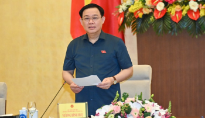
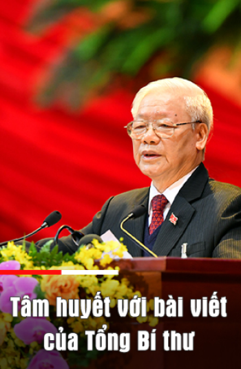

Bài viết luận giải đầy sức thuyết phục, sâu sắc một vấn đề lớn, rất cơ bản, quan trọng trong sự nghiệp cách mạng nước ta, trên cơ sở kết hợp nhuần nhuyễn lý luận và thực tiễn: nói thực tiễn mà rất lý luận, nói lý luận trên nền thực tiễn sinh động... Bài viết đã đề cập toàn diện, thấu đáo tất cả các lĩnh vực của sự nghiệp xây dựng chủ nghĩa xã hội trên đất nước ta, làm sáng tỏ bốn câu hỏi lớn mà Tổng Bí thư đặt ra. Bài viết đã giúp cán bộ, đảng viên và nhân dân ta tin tưởng vững chắc hơn dựa trên cơ sở hiểu sâu sắc, toàn diện, đầy đủ, có căn cứ khoa học và thực tiễn về "định hình chủ nghĩa xã hội thế nào, và định hướng đi lên chủ nghĩa xã hội thế nào cho phù hợp với hoàn cảnh, đặc điểm cụ thể ở Việt Nam?" (1). Bài viết cũng làm sâu sắc hơn những chủ trương, đường lối do Ðại hội XIII của Ðảng đề ra để tạo sự thống nhất trong Ðảng, sự đồng thuận trong xã hội nhằm thực hiện thắng lợi mục tiêu Ðại hội XIII của Ðảng đề ra.
|  |
| Chủ tịch Quốc hội chủ trì Phiên họp thứ 8 của Hội đồng Bầu cử quốc gia |
Trong bài viết, Tổng Bí thư phân tích sâu sắc, với bằng chứng hùng hồn, không thể bác bỏ về sự thật bản chất của chủ nghĩa tư bản hiện đại: một xã hội, dù đạt được thành tựu về phát triển lực lượng sản xuất, phát triển khoa học - công nghệ, có sự điều chỉnh về phúc lợi xã hội…, nhưng là xã hội phát triển không bền vững cả về kinh tế, xã hội và môi trường; mâu thuẫn giữa lao động và tư bản ngày càng gay gắt; một xã hội "tự do,bình đẳng" hình thức, thực tế người dân không có điều kiện thực hiện các quyền đó…
Bộ Y tế đề nghị dừng dịch vụ quán bar, karaoke... nguy cơ cao lây lan dịch COVID-19
Tổng Bí thư phân tích sâu sắc hơn quy luật của cách mạng Việt Nam: độc lập gắn liền với chủ nghĩa xã hội. Quá độ lên chủ nghĩa xã hội là con đường tất yếu của cách mạng Việt Nam, là mục tiêu, lý tưởng của Ðảng, là nguyện vọng thiết tha của nhân dân ta…
Trả lời câu hỏi lớn: chủ nghĩa xã hội là gì và con đường đi lên chủ nghĩa xã hội bằng cách nào? để vừa tuân theo quy luật chung vừa phù hợp điều kiện cụ thể của Việt Nam, Tổng Bí thư khẳng định tám đặc trưng của xã hội xã hội chủ nghĩa mà Ðảng và nhân dân ta phấn đấu xây dựng. Tổng Bí thư phân tích trên cơ sở lý luận và thực tiễn vững chắc, xác đáng, đầy sức thuyết phục về con đường đi lên chủ nghĩa xã hội ở nước ta trên tất cả các lĩnh vực: chính trị, kinh tế, văn hóa, xã hội, con người, an ninh quốc phòng, đối ngoại, xây dựng Nhà nước pháp quyền xã hội chủ nghĩa, xây dựng, chỉnh đốn Ðảng… Chẳng hạn như: Tổng Bí thư phân tích thời kỳ quá độ lên chủ nghĩa xã hội bỏ qua chủ nghĩa tư bản là bỏ qua cái gì và phải kế thừa cái gì. Tổng Bí thư nhấn mạnh: "Ðưa ra quan niệm phát triển kinh tế thị trường định hướng xã hội chủ nghĩa là một đột phá lý luận rất cơ bản và sáng tạo của Ðảng ta…"; "văn hóa là nền tảng tinh thần của xã hội, sức mạnh nội sinh, động lực phát triển đất nước và bảo vệ Tổ quốc…"; "Xã hội xã hội chủ nghĩa là xã hội hướng tới các giá trị tiến bộ, nhân văn, dựa trên nền tảng lợi ích chung của toàn xã hội hài hòa với lợi ích chính đáng của con người"…, tất cả "đều vì lợi ích của nhân dân, lấy hạnh phúc của nhân dân làm mục tiêu phấn đấu"…; xây dựng Nhà nước pháp quyền xã hội chủ nghĩa thật sự của nhân dân, do nhân dân, và vì nhân dân; "sự lãnh đạo của Ðảng Cộng sản là nhân tố quyết định thắng lợi của công cuộc đổi mới và bảo đảm cho đất nước phát triển theo đúng định hướng xã hội chủ nghĩa"… Vì vậy, phải đặc biệt chú trọng xây dựng, chỉnh đốn Ðảng, coi đây là nhiệm vụ then chốt, sống còn…; vận hành hiệu quả cơ chế: Ðảng lãnh đạo, Nhà nước quản lý và nhân dân làm chủ…
|  |
| Quang cảnh Phiên họp tiểu ban nhân sự hội đồng Bầu cử Quốc gia. (Ảnh: Phạm Kiên/TTXVN) |
Trong bài viết, bằng thành tựu to lớn, có ý nghĩa lịch sử qua thực tiễn 35 năm đổi mới toàn diện đất nước, Tổng Bí thư chứng minh: con đường đi lên chủ nghĩa xã hội mà Bác Hồ, Ðảng ta, nhân dân ta lựa chọn là hoàn toàn đúng đắn, kết quả đạt được là không thể phủ nhận. Ðồng thời, Tổng Bí thư cũng chỉ ra những khuyết điểm, hạn chế và những thách thức mà chúng ta đang phải đối mặt…
Tổng Bí thư khẳng định: "xây dựng chủ nghĩa xã hội là kiến tạo một kiểu xã hội mới về chất, hoàn toàn không hề đơn giản, dễ dàng. Ðây là cả một sự nghiệp sáng tạo vĩ đại, đầy thử thách, khó khăn, một sự nghiệp tự giác, liên tục, hướng đích lâu dài, không thể nóng vội".... Ðây là cả một sự nghiệp sáng tạo vĩ đại, đầy thử thách, khó khăn, một sự nghiệp tự giác, liên tục, hướng đích lâu dài, không thể nóng vội"... Ðiều hết sức quan trọng là phải luôn kiên định và vững vàng trên nền tảng tư tưởng lý luận của chủ nghĩa Mác - Lê-nin, tư tưởng Hồ Chí Minh…
2. Chúng tôi xin tham góp thêm về một vấn đề Tổng Bí thư Nguyễn Phú Trọng đã khẳng định trong bài viết: "Ðưa ra quan niệm phát triển kinh tế thị trường định hướng xã hội chủ nghĩa là một đột phá lý luận rất cơ bản và sáng tạo của Ðảng ta, là thành quả lý luận quan trọng qua 35 năm thực hiện đường lối đổi mới, xuất phát từ thực tiễn Việt Nam và tiếp thu có chọn lọc kinh nghiệm của thế giới". Cả lý luận và thực tiễn chứng minh nhận định trên của Tổng Bí thư là hoàn toàn đúng đắn. Kinh tế thị trường (trình độ phát triển cao của kinh tế hàng hóa, khi mọi sản phẩm đều có thể trở thành hàng hóa) là sản phẩm của văn minh nhân loại, xuất hiện từ rất xa xưa, được phát triển tới trình độ cao dưới chủ nghĩa tư bản, nhưng tự bản thân kinh tế thị trường không đồng nghĩa với chủ nghĩa tư bản. Nghĩa là, kinh tế thị trường không phải là sản phẩm riêng có của chủ nghĩa tư bản, mà kinh tế hàng hóa - nguồn nuôi dưỡng và xuất phát điểm của kinh tế thị trường - tồn tại trong nhiều chế độ xã hội khác nhau, song không có kinh tế thị trường chung, đồng nhất cho mọi chế độ xã hội khác nhau. Mặc dù, kinh tế thị trường là mô hình phát triển phổ quát, có những đặc điểm chung, có những giá trị, nguyên tắc, chuẩn mực chung, vận động theo những quy luật chung…, nhưng ở mỗi quốc gia, kinh tế thị trường có sắc thái riêng, có dấu ấn riêng. Trong mỗi chế độ xã hội khác nhau, kinh tế thị trường mang những đặc trưng, bản chất khác nhau tùy thuộc vào trình độ phát triển lực lượng sản xuất, vào bản chất chính trị của chế độ xã hội đó, phù hợp với lịch sử, văn hóa, xã hội, truyền thống, tập quán của từng quốc gia, dân tộc. Mặc dù rằng, những quy luật kinh tế chi phối sự vận động, phát triển của nền kinh tế thị trường là khách quan, có những yêu cầu tất yếu như nhau; nhưng quan điểm, cách thức… vận dụng những quy luật kinh tế khách quan đó trong mỗi quốc gia là khác nhau. Không thể có nền kinh tế thị trường ở nước này lại là bản sao của kinh tế thị trường ở nước khác. Trên thế giới đã có nhiều mô hình phát triển kinh tế thị trường như kinh tế thị trường tự do ở Mỹ, kinh tế thị trường xã hội ở Cộng hòa Liên bang Ðức, kinh tế thị trường cộng đồng trách nhiệm (hay phối hợp) ở Nhật Bản, kinh tế thị trường nhà nước phúc lợi ở Thụy Ðiển, kinh tế thị trường xã hội chủ nghĩa đặc sắc Trung Quốc… Lần đầu tiên trong lịch sử xã hội loài người, trong lịch sử phát triển kinh tế thị trường xuất hiện mô hình kinh tế thị trường mới - kinh tế thị trường định hướng xã hội chủ nghĩa. Ðây thật sự là "một đột phá lý luận rất cơ bản và sáng tạo của Ðảng ta…". Qua thực tiễn hơn 35 năm đổi mới toàn diện đất nước, một thành quả lý luận quan trọng được khẳng định: phát triển nền kinh tế thị trường định hướng xã hội chủ nghĩa là hoàn toàn đúng đắn, là sự vận dụng sáng tạo của Ðảng ta và là con đường, phương thức để xây dựng chủ nghĩa xã hội trên đất nước ta. Nước ta đang trong thời kỳ quá độ lên chủ nghĩa xã hội thì nền kinh tế là nền kinh tế quá độ, không thể có ngay kinh tế thị trường xã hội chủ nghĩa, nước ta phát triển kinh tế thị trường định hướng xã hội chủ nghĩa - mô hình kinh tế tổng quát trong thời kỳ quá độ lên chủ nghĩa xã hội - vừa tiếp thu có chọn lọc kinh nghiệm phát triển kinh tế thị trường của thế giới vừa vận dụng, phát triển sáng tạo cho phù hợp với điều kiện thực tiễn Việt Nam. Kinh tế thị trường định hướng xã hội chủ nghĩa là một thể thống nhất bao gồm hai mặt gắn bó biện chứng hữu cơ với nhau, là kinh tế thị trường hiện đại, hội nhập quốc tế, vận hành đầy đủ, đồng bộ theo các quy luật của kinh tế thị trường, có sự quản lý của Nhà nước pháp quyền xã hội chủ nghĩa, do Ðảng Cộng sản Việt Nam lãnh đạo; đồng thời bảo đảm định hướng xã hội chủ nghĩa vì mục tiêu dân giàu, nước mạnh, dân chủ, công bằng, văn minh phù hợp với từng giai đoạn phát triển của đất nước; con người vừa là mục tiêu vừa là động lực, nguồn lực phát triển… Kinh tế thị trường định hướng xã hội chủ nghĩa vừa vận động, phát triển tuân theo, chịu sự chi phối của những quy luật của kinh tế thị trường; vừa dựa trên cơ sở và được dẫn dắt, chi phối, hàm chứa, gắn với và hướng tới những giá trị cơ bản của các nguyên tắc và bản chất của chủ nghĩa xã hội. Kinh tế thị trường định hướng xã hội chủ nghĩa phát triển đồng bộ, toàn diện trong cả bốn khâu của quá trình tái sản xuất xã hội: sản xuất, phân phối, trao đổi, tiêu dùng; trên cả ba quan hệ cơ bản của quan hệ sản xuất xã hội theo định hướng xã hội chủ nghĩa: sở hữu, tổ chức quản lý và phân phối. "Nền kinh tế thị trường định hướng xã hội chủ nghĩa Việt Nam có nhiều hình thức sở hữu, nhiều thành phần kinh tế, trong đó: kinh tế nhà nước giữ vai trò chủ đạo; kinh tế tập thể, kinh tế hợp tác không ngừng được củng cố, phát triển; kinh tế tư nhân là một động lực quan trọng; kinh tế có vốn đầu tư nước ngoài được khuyến khích phát triển phù hợp với chiến lược, quy hoạch và kế hoạch phát triển kinh tế - xã hội"(2). Các thành phần kinh tế hợp tác, cạnh tranh lành mạnh, bình đẳng, hoạt động theo pháp luật đều là bộ phận hợp thành hữu cơ quan trọng của nền kinh tế quốc dân, cùng tồn tại, phát triển lâu dài. Các thành phần kinh tế được bình đẳng trong huy động, phân bổ, sử dụng các nguồn lực phát triển và trách nhiệm, nghĩa vụ đối với đất nước, đối với xã hội. Phân phối các nguồn lực "đầu vào" cho sản xuất và phân phối sản phẩm làm ra bảo đảm công bằng, công khai, minh bạch và tạo động lực cho phát triển. Ở nước ta hiện nay thực hiện chế độ phân phối với nhiều hình thức, chủ yếu là phân phối theo lao động, theo kết quả lao động, hiệu quả kinh tế, đồng thời còn phân phối theo mức đóng góp vốn cùng các nguồn lực khác và phân phối thông qua hệ thống an sinh xã hội, phúc lợi xã hội. Nhà nước quản lý nền kinh tế bằng pháp luật, chiến lược, quy hoạch, kế hoạch, chính sách… Nhà nước đóng vai trò định hướng, xây dựng và hoàn thiện thể chế kinh tế, tạo môi trường cạnh tranh bình đẳng, minh bạch và lành mạnh; sử dụng các công cụ và các nguồn lực của Nhà nước để định hướng và điều tiết nền kinh tế, thúc đẩy sản xuất, kinh doanh và bảo vệ môi trường; thực hiện tiến bộ, công bằng xã hội trong từng bước, từng chính sách phát triển. Phát huy vai trò làm chủ của nhân dân trong phát triển kinh tế - xã hội… Tổng Bí thư đã chỉ ra rằng: "Một đặc trưng cơ bản, một thuộc tính quan trọng của định hướng xã hội chủ nghĩa trong kinh tế thị trường ở Việt Nam là phải gắn kinh tế với xã hội, thống nhất chính sách kinh tế với chính sách xã hội, tăng trưởng kinh tế đi đôi với thực hiện tiến bộ và công bằng xã hội ngay trong từng bước, từng chính sách và trong suốt quá trình phát triển. Ðiều đó có nghĩa là: không chờ đến khi kinh tế đạt tới trình độ phát triển cao rồi mới thực hiện tiến bộ và công bằng xã hội, càng không "hy sinh" tiến bộ và công bằng xã hội để chạy theo tăng trưởng kinh tế đơn thuần. Trái lại, mỗi chính sách kinh tế đều phải hướng tới mục tiêu phát triển xã hội; mỗi chính sách xã hội phải nhằm tạo ra động lực thúc đẩy phát triển kinh tế; khuyến khích làm giàu hợp pháp phải đi đôi với xóa đói, giảm nghèo bền vững, chăm sóc những người có công, những người có hoàn cảnh khó khăn. Ðây là một yêu cầu có tính nguyên tắc để bảo đảm sự phát triển lành mạnh, bền vững, theo định hướng xã hội chủ nghĩa"...